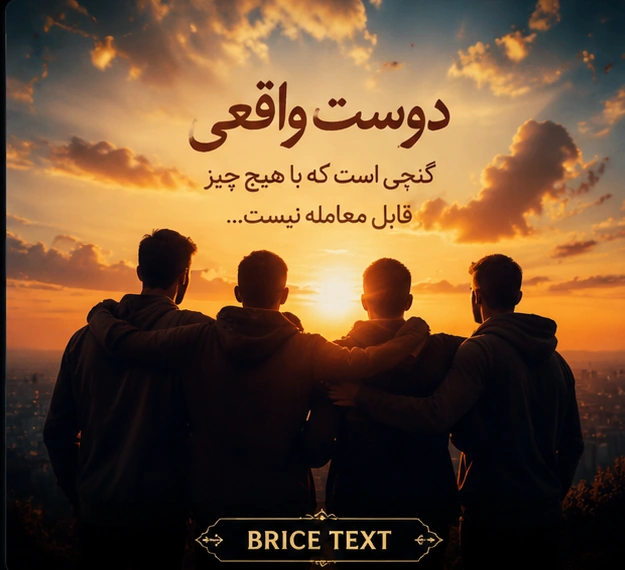

زیباترین جملات رفاقتی و دوستانه فارسی

دوست واقعی کسی است که حتی وقتی همه چیز سخت میشود، کنار تو میماند.
بعضی آدمها فقط دوست نیستند؛ بخشی از خاطرات زیبای زندگی ما هستند.
داشتن یک دوست خوب یعنی داشتن کسی که بدون قضاوت تو را میفهمد.
رفاقت واقعی با زمان کم نمیشود؛ با خاطرهها عمیقتر میشود.
یک دوست خوب میتواند حتی سادهترین روزها را به خاطرهای زیبا تبدیل کند.
رفیق خوبم، ممنونم که همیشه یک دلیل برای لبخند زدن به من دادهای.
بعضی دوستیها با یک آشنایی ساده شروع میشوند و تبدیل به یک رابطه ارزشمند میشوند.
دوست صمیمی یعنی کسی که سکوتت را هم مثل حرفهایت میفهمد.
رفاقت یعنی داشتن کسی که در خوشیها با تو بخندد و در سختیها کنارت بماند.
گاهی یک دوست خوب از هزاران آشنای معمولی ارزشمندتر است.
دوستی واقعی با حرف ثابت نمیشود؛ با حضور در لحظههای مهم زندگی نشان داده میشود.
زیباترین هدیه زندگی، داشتن آدمهایی است که قلبشان برای خوشحالی تو میتپد.
رفیق واقعی کسی است که موفقیت تو را مثل موفقیت خودش خوشحال کند.
رفاقت یعنی یک قلب آرام در کنار یک آدم قابل اعتماد.
بهترین لحظهها همانهایی هستند که با دوستان واقعی ساخته میشوند.
دوست خوب یعنی کسی که بودنش حال دلت را بهتر میکند.
بعضی آدمها وارد زندگی ما میشوند تا ثابت کنند هنوز هم دوستی واقعی وجود دارد.
رفیق خوب یک نعمت است؛ چیزی که باید قدرش را دانست.
دوست قدیمی یعنی کسی که خاطرات زیادی از گذشتهات را با تو شریک است.
سالها میگذرند، اما بعضی رفاقتها همچنان همان حس خوب روز اول را دارند.
دوست قدیمی مثل یک خاطره زنده است؛ همیشه با ارزش و دوستداشتنی.
بعضی رفاقتها با فاصله کم نمیشوند؛ فقط ارزششان بیشتر میشود.
خوشبختی یعنی داشتن کسانی که سالهاست کنار تو ماندهاند.
رفیق خوب کسی است که حضورش حتی در سختترین روزها امید میدهد.
بعضی آدمها دوست نیستند؛ خانوادهای هستند که خودمان انتخاب کردهایم.
مهم نیست چند سال بگذرد، بعضی رفاقتها همیشه تازه میمانند.
دوست واقعی کسی است که موفقیت تو را بدون حسادت جشن بگیرد.
رفاقت یعنی کسی را داشته باشی که بتوانی خود واقعیات باشی.
دوست خوب، آرامش کوچکی است وسط شلوغیهای زندگی.
قشنگترین خاطرات زندگی، کنار آدمهای درست ساخته میشوند.
رفاقت با ارزشتر از چیزی است که بتوان با کلمات توضیح داد.
یک دوست واقعی میتواند یک روز معمولی را تبدیل به خاطرهای خاص کند.
دوستی یعنی بودن، حتی وقتی هیچ حرفی برای گفتن نیست.
ممنونم که همیشه کنارم بودی و لحظههای زندگی را زیباتر کردی.
داشتن دوستی مثل تو یکی از بهترین اتفاقهای زندگی من است.
از تمام لحظههایی که با هم ساختیم ممنونم؛ خاطراتی که همیشه ماندگار هستند.
رفاقت تو برای من یک ارزش بزرگ است که هیچوقت فراموش نمیکنم.
امیدوارم همیشه خوشحال باشی؛ چون یک دوست خوب لایق بهترینهاست.